Last month, PMA and IPUMS PMA co-hosted a webinar introducing both R and Stata users to the new family planning panel survey we’ve been covering recently here on the blog. In our example analysis, we used interviews with women aged 15-49 in Burkina Faso and Kenya to examine how COVID-19 impacted both adoption and discontinuation of contraceptives between Phase 1 and Phase 2 of the study.
Below you’ll find a video recording of the complete webinar, beginning with an overview of the PMA panel study design. Attendees were invited to create their own data extract through the IPUMS PMA website, and to try replicating our analysis with downloadable R or Stata code.
In the breakout sessions, we walked R and Stata users through a few of the key data cleaning, visualization, and modeling steps we use in our analysis. You can download executable scripts from both the R session and the Stata session, or follow along with our example code shown below.
R-users Breakout Session
Setup
R users should always select a .dat (fixed-width text) data format on the IPUMS PMA website.
You’ll receive a compressed dat.gz file - no need to decompress!
Save both of those files in the “data” folder of your working directory.

You’ll need the ipumsr package to load them. If not installed, you can download from CRAN.
install.packages("ipumsr")
Each session, load the ipumsr library before you import
data.
library(ipumsr)
# Load data into R with `ipumsr`
dat <- read_ipums_micro(
ddi = "data/pma_00093.xml",
data = "data/pma_00093.dat.gz"
)
Other useful packages for IPUMS data:
Analytic Sample
PMA uses an open panel design - women may enter the panel after Phase 1, and they may be lost to follow-up after any phase (see RESULTFQ).
Women who enter the panel at Phase 2 are NA for all
variables at Phase 1.
# A tibble: 3 × 2
RESULTFQ_1 n
<int+lbl> <int>
1 1 [Completed] 16314
2 5 [Partly completed] 34
3 NA 4514Women whose households were not found again after Phase 1 are
NA for all variables at Phase 2.
# A tibble: 11 × 2
RESULTFQ_2 n
<int+lbl> <int>
1 1 [Completed] 17015
2 2 [Not at home] 106
3 3 [Postponed] 24
4 4 [Refused] 87
5 5 [Partly completed] 22
6 7 [Respondent moved] 18
7 10 [Incapacitated] 24
8 95 [Not interviewed (female questionnaire)] 4
9 96 [Not interviewed (household questionnaire)] 197
10 99 [NIU (not in universe)] 1353
11 NA 2012We will only include women who were available and completed the Female Questionnaire for both Phase 1 and Phase 2.
# A tibble: 1 × 3
RESULTFQ_1 RESULTFQ_2 n
<int+lbl> <int+lbl> <int>
1 1 [Completed] 1 [Completed] 12501Additionally, PMA samples are only valid for the de facto population: women who slept in the household the night before the Household interview (see RESIDENT).
# A tibble: 3 × 2
RESIDENT_1 n
<int+lbl> <int>
1 11 [Visitor, slept in hh last night] 140
2 21 [Usual member, did not sleep in hh last night] 194
3 22 [Usual member, slept in hh last night] 12167We’ll also drop cases where the woman was not part of the de facto population in either Phase 1 or Phase 2.
How many cases remain?
# A tibble: 2 × 2
COUNTRY n
<int+lbl> <int>
1 1 [Burkina Faso] 5208
2 7 [Kenya] 6935Recoding Independent variables
PMA surveys contain many categorical variables. These are usually represented as factors in R.
In an IPUMS data extract, you won’t see factors!
Instead, we generate labelled numeric variables (note the label in brackets).
dat %>% ipums_var_label(CVINCOMELOSS_2)
[1] "Income loss resulted from COVID-19 restrictions"# A tibble: 4 × 2
CVINCOMELOSS_2 n
<int+lbl> <int>
1 0 [No] 658
2 1 [Yes] 7566
3 97 [Don't know] 2
4 99 [NIU (not in universe)] 3917The ipumsr package contains tools for working with labelled IPUMS data.
Usually, we handle codes like 99 [NIU (not in universe)]
before transforming other missing data to NA.
# A tibble: 7 × 3
CVINCOMELOSS_2 HHINCOMELOSSAMT_2 n
<int+lbl> <int+lbl> <int>
1 0 [No] 2 [Partial] 547
2 0 [No] 3 [Complete] 111
3 1 [Yes] 2 [Partial] 5449
4 1 [Yes] 3 [Complete] 2117
5 97 [Don't know] 2 [Partial] 2
6 99 [NIU (not in universe)] 1 [None] 3904
7 99 [NIU (not in universe)] 98 [No response or missing] 13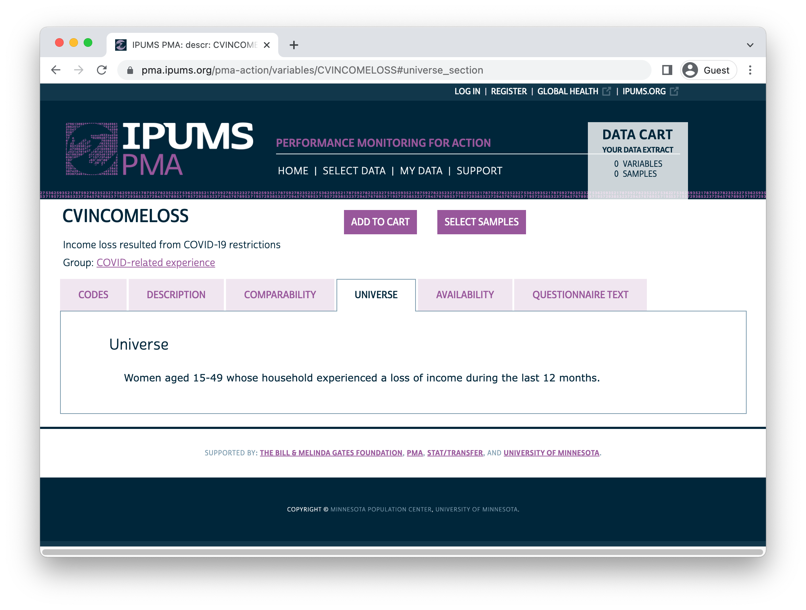
For CVINCOMELOSS_2,
99 [NIU (not in universe)] may indicate that the household
experienced no income loss in the last year, or it may indicate
that HHINCOMELOSSAMT_2
is 98 [No response or missing].
We should treat the NIU women from households without
any income loss as “No” in CVINCOMELOSS_2.
dat <- dat %>%
mutate(
CVINCOMELOSS_2 = CVINCOMELOSS_2 %>%
labelled::recode_if(HHINCOMELOSSAMT_2 == 1, 0)
)
dat %>% count(CVINCOMELOSS_2, HHINCOMELOSSAMT_2)
# A tibble: 7 × 3
CVINCOMELOSS_2 HHINCOMELOSSAMT_2 n
<int+lbl> <int+lbl> <int>
1 0 [No] 1 [None] 3904
2 0 [No] 2 [Partial] 547
3 0 [No] 3 [Complete] 111
4 1 [Yes] 2 [Partial] 5449
5 1 [Yes] 3 [Complete] 2117
6 97 [Don't know] 2 [Partial] 2
7 99 [NIU (not in universe)] 98 [No response or missing] 13Next, we’ll use NA to represent the remaining values
above 90:
97 [Don't know]and- remaining cases marked
99 [NIU (not in universe)]
dat <- dat %>%
mutate(
CVINCOMELOSS_2 = CVINCOMELOSS_2 %>%
lbl_na_if(~.val > 90)
)
dat %>% count(CVINCOMELOSS_2, HHINCOMELOSSAMT_2)
# A tibble: 7 × 3
CVINCOMELOSS_2 HHINCOMELOSSAMT_2 n
<int+lbl> <int+lbl> <int>
1 0 [No] 1 [None] 3904
2 0 [No] 2 [Partial] 547
3 0 [No] 3 [Complete] 111
4 1 [Yes] 2 [Partial] 5449
5 1 [Yes] 3 [Complete] 2117
6 NA 2 [Partial] 2
7 NA 98 [No response or missing] 13Once you’re done with labels, we recommend transforming key variables into factors with forcats::as_factor.
# A tibble: 3 × 2
CVINCOMELOSS_2 n
<fct> <int>
1 No 4562
2 Yes 7566
3 <NA> 15This will make categorical variables easier to use in data visualization and as “dummy” variables in regression analysis.
Likert-style questions can be treated as factors, too.
dat %>% ipums_var_label(COVIDCONCERN_2)
[1] "Concerned about getting infected"# A tibble: 6 × 2
COVIDCONCERN_2 n
<int+lbl> <int>
1 1 [Not concerned] 374
2 2 [A little concerned] 677
3 3 [Concerned] 2470
4 4 [Very concerned] 8610
5 5 [Currently / previously infected with COVID-19] 9
6 98 [No response or missing] 3This time we’ll treat codes 5 and above as
NA.
dat <- dat %>%
mutate(
COVIDCONCERN_2 = COVIDCONCERN_2 %>%
lbl_na_if(~.val >= 5) %>%
as_factor()
)
dat %>% count(COVIDCONCERN_2)
# A tibble: 5 × 2
COVIDCONCERN_2 n
<fct> <int>
1 Not concerned 374
2 A little concerned 677
3 Concerned 2470
4 Very concerned 8610
5 <NA> 12You can apply the same transformation to several variables with help from dplyr::across.
Often, it’s important to set a reference group against which all dummy variables will be compared.
You can manually specify a refernece group when you set factor “levels” with a function like forcats::fct_relevel.
dat <- dat %>%
mutate(
AGE_2 = case_when(
AGE_2 < 25 ~ "15-24",
AGE_2 < 35 ~ "25-34",
AGE_2 < 50 ~ "35-49"
),
AGE_2 = AGE_2 %>% fct_relevel("15-24", "25-34", "35-49")
)
Dependent variables
We’ll use our recoded variables to model the likelihood of contraceptive method adoption and discontinuation between phases (see CP).
# A tibble: 4 × 3
CP_1 CP_2 n
<int+lbl> <int+lbl> <int>
1 0 [No] 0 [No] 5107
2 0 [No] 1 [Yes] 1939
3 1 [Yes] 0 [No] 1178
4 1 [Yes] 1 [Yes] 3917A woman has adopted a method if she was not using one at Phase 1, but then reported using one at Phase 2.
She has discontinued a method if she did use one at Phase 1, but no longer uses one at Phase 2.
dat <- dat %>%
mutate(
FPSTATUS = case_when(
CP_1 == 1 & CP_2 == 1 ~ "User",
CP_1 == 0 & CP_2 == 0 ~ "Non-user",
CP_1 == 1 & CP_2 == 0 ~ "Discontinued",
CP_1 == 0 & CP_2 == 1 ~ "Adopted"
),
FPSTATUS = fct_infreq(FPSTATUS)
)
Un-weighted sample proportions for FPSTATUS can be found
with count and prop.table:
# A tibble: 8 × 4
# Groups: COUNTRY [2]
COUNTRY FPSTATUS n prop
<fct> <fct> <int> <dbl>
1 Burkina Faso Non-user 2589 0.497
2 Burkina Faso User 1241 0.238
3 Burkina Faso Adopted 821 0.158
4 Burkina Faso Discontinued 556 0.107
5 Kenya Non-user 2518 0.363
6 Kenya User 2676 0.386
7 Kenya Adopted 1118 0.161
8 Kenya Discontinued 622 0.0897We’ll plot this table with ggplot2.
dat_nowt %>%
ggplot(aes(x = prop, y = FPSTATUS, fill = FPSTATUS)) +
geom_bar(stat = "identity") +
facet_wrap(~COUNTRY) + theme_minimal() +
theme(axis.title = element_blank(), legend.position = "none") +
scale_x_continuous(labels = scales::label_percent())
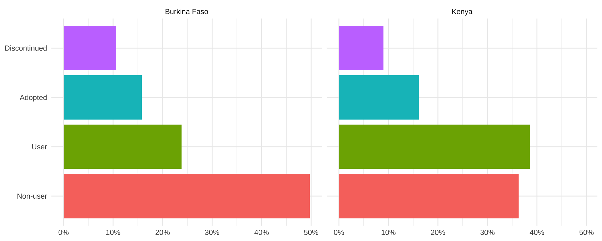
For weighted population estimates, use as_survey_design and survey_mean from the srvyr package.
Use prop = TRUE to adjust standard errors near 0% or
100% for proportions.
dat_wtd <- dat %>%
as_survey_design(weight = PANELWEIGHT, id = EAID_1, strata = STRATA_1) %>%
group_by(COUNTRY, FPSTATUS) %>%
summarise(survey_mean(prop = TRUE, prop_method = "logit", vartype = "ci"))
dat_wtd
# A tibble: 8 × 5
# Groups: COUNTRY [2]
COUNTRY FPSTATUS coef `_low` `_upp`
<fct> <fct> <dbl> <dbl> <dbl>
1 Burkina Faso Non-user 0.563 0.529 0.596
2 Burkina Faso User 0.188 0.164 0.214
3 Burkina Faso Adopted 0.150 0.133 0.168
4 Burkina Faso Discontinued 0.0999 0.0870 0.115
5 Kenya Non-user 0.378 0.361 0.396
6 Kenya User 0.366 0.350 0.382
7 Kenya Adopted 0.165 0.153 0.177
8 Kenya Discontinued 0.0912 0.0830 0.100dat_wtd %>%
ggplot(aes(x = coef, y = FPSTATUS, fill = FPSTATUS)) +
geom_bar(stat = "identity") +
geom_errorbar(aes(xmin = `_low`, xmax = `_upp`), width = 0.2, alpha = 0.5) +
facet_wrap(~COUNTRY) + theme_minimal() +
theme(axis.title = element_blank(), legend.position = "none") +
scale_x_continuous(labels = scales::label_percent())
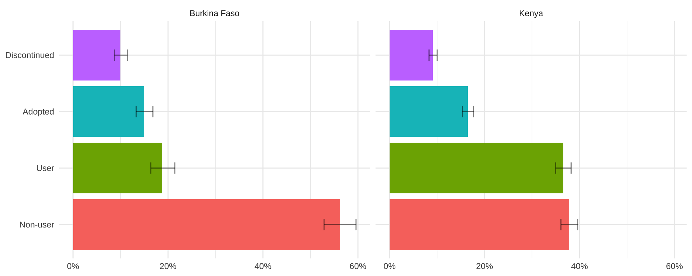
Analysis
The same srvyr toolkit can be used to model our dependent variables with survey::svyglm.
Consider women who were not using a method at Phase 1:
adopt_glm <- dat %>%
filter(CP_1 == 0) %>%
mutate(adopt = FPSTATUS == "Adopted") %>%
group_by(COUNTRY) %>%
summarise(
adopt = cur_data() %>%
as_survey_design(weight = PANELWEIGHT, id = EAID_1, strata = STRATA_1) %>%
svyglm(
adopt ~ CVINCOMELOSS_2 + COVIDCONCERN_2 + URBAN + WEALTHT_2 + EDUCATTGEN_2 + AGE_2,
family = "quasibinomial", design = .
) %>%
broom::tidy(exp = TRUE) %>%
mutate(sig = gtools::stars.pval(p.value)) %>%
list()
)
adopt_glm
# A tibble: 2 × 2
COUNTRY adopt
<fct> <list>
1 Burkina Faso <tibble [13 × 6]>
2 Kenya <tibble [13 × 6]>For Phase 1 non-users in Burkina Faso, very high levels of concern about becoming infected with COVID-19 are significantly associated with higher chances of adopting a contraceptive method (relative to women who had no such concern).
Lesser levels of concern are not statistically significant, nor is household income loss from COVID-19.
# A tibble: 13 × 7
COUNTRY term estimate std.error statistic p.value sig
<fct> <chr> <dbl> <dbl> <dbl> <dbl> <chr>
1 Burkina Faso (Intercept) 0.0985 0.366 -6.33 2.62e-9 "***"
2 Burkina Faso CVINCOMELO… 1.28 0.155 1.61 1.09e-1 " "
3 Burkina Faso COVIDCONCE… 1.80 0.373 1.58 1.17e-1 " "
4 Burkina Faso COVIDCONCE… 1.37 0.351 0.891 3.75e-1 " "
5 Burkina Faso COVIDCONCE… 1.91 0.318 2.02 4.46e-2 "*"
6 Burkina Faso URBANUrban 1.36 0.186 1.65 1.01e-1 " "
7 Burkina Faso WEALTHT_2M… 0.962 0.170 -0.230 8.18e-1 " "
8 Burkina Faso WEALTHT_2H… 0.735 0.220 -1.40 1.64e-1 " "
9 Burkina Faso EDUCATTGEN… 1.44 0.161 2.24 2.65e-2 "*"
10 Burkina Faso EDUCATTGEN… 1.51 0.181 2.27 2.46e-2 "*"
11 Burkina Faso EDUCATTGEN… 2.30 0.352 2.37 1.92e-2 "*"
12 Burkina Faso AGE_225-34 1.72 0.180 3.02 2.98e-3 "**"
13 Burkina Faso AGE_235-49 1.08 0.195 0.385 7.01e-1 " " In Kenya, neither of these measures are significantly predictive of adoption among non-users.
# A tibble: 13 × 7
COUNTRY term estimate std.error statistic p.value sig
<fct> <chr> <dbl> <dbl> <dbl> <dbl> <chr>
1 Kenya (Intercept) 0.104 0.371 -6.09 3.76e- 9 "***"
2 Kenya CVINCOMELOSS_2… 1.20 0.111 1.61 1.08e- 1 " "
3 Kenya COVIDCONCERN_2… 0.645 0.351 -1.25 2.13e- 1 " "
4 Kenya COVIDCONCERN_2… 0.794 0.256 -0.900 3.69e- 1 " "
5 Kenya COVIDCONCERN_2… 0.907 0.254 -0.385 7.00e- 1 " "
6 Kenya URBANUrban 1.17 0.147 1.06 2.92e- 1 " "
7 Kenya WEALTHT_2Middl… 1.12 0.112 1.01 3.15e- 1 " "
8 Kenya WEALTHT_2Highe… 0.817 0.151 -1.34 1.80e- 1 " "
9 Kenya EDUCATTGEN_2Pr… 2.30 0.273 3.05 2.53e- 3 "**"
10 Kenya EDUCATTGEN_2Se… 2.87 0.302 3.49 5.54e- 4 "***"
11 Kenya EDUCATTGEN_2Te… 3.63 0.306 4.21 3.51e- 5 "***"
12 Kenya AGE_225-34 3.06 0.128 8.71 2.98e-16 "***"
13 Kenya AGE_235-49 1.61 0.131 3.62 3.53e- 4 "***"What about method dicontinuation for women who were using a method at Phase 1?
stop_glm <- dat %>%
filter(CP_1 == 1) %>%
mutate(stop = FPSTATUS == "Discontinued") %>%
group_by(COUNTRY) %>%
summarise(
stop = cur_data() %>%
as_survey_design(weight = PANELWEIGHT, id = EAID_1, strata = STRATA_1) %>%
svyglm(
stop ~ CVINCOMELOSS_2 + COVIDCONCERN_2 + URBAN + WEALTHT_2 + EDUCATTGEN_2 + AGE_2,
family = "quasibinomial", design = .
) %>%
broom::tidy(exp = TRUE) %>%
mutate(sig = gtools::stars.pval(p.value)) %>%
list()
)
stop_glm
# A tibble: 2 × 2
COUNTRY stop
<fct> <list>
1 Burkina Faso <tibble [13 × 6]>
2 Kenya <tibble [13 × 6]>This time, neither of the COVID-19 measures are significantly associated with discontinuation for Phase 1 contraceptive users in Burkina Faso.
# A tibble: 13 × 7
COUNTRY term estimate std.error statistic p.value sig
<fct> <chr> <dbl> <dbl> <dbl> <dbl> <chr>
1 Burkina Faso (Intercept) 0.536 0.407 -1.53 0.127 " "
2 Burkina Faso CVINCOMELO… 0.857 0.185 -0.835 0.405 " "
3 Burkina Faso COVIDCONCE… 1.18 0.442 0.379 0.705 " "
4 Burkina Faso COVIDCONCE… 0.922 0.425 -0.192 0.848 " "
5 Burkina Faso COVIDCONCE… 0.935 0.335 -0.200 0.842 " "
6 Burkina Faso URBANUrban 0.951 0.231 -0.215 0.830 " "
7 Burkina Faso WEALTHT_2M… 1.47 0.211 1.82 0.0702 "."
8 Burkina Faso WEALTHT_2H… 0.797 0.238 -0.952 0.343 " "
9 Burkina Faso EDUCATTGEN… 1.29 0.212 1.21 0.226 " "
10 Burkina Faso EDUCATTGEN… 1.16 0.250 0.596 0.552 " "
11 Burkina Faso EDUCATTGEN… 0.787 0.289 -0.828 0.409 " "
12 Burkina Faso AGE_225-34 1.11 0.215 0.482 0.630 " "
13 Burkina Faso AGE_235-49 0.784 0.244 -0.997 0.320 " " However, higher levels concern with becoming infected with COVID-19 are significantly associated with higher odds of discontinuation for Phase 1 contraceptive users in Kenya.
# A tibble: 13 × 7
COUNTRY term estimate std.error statistic p.value sig
<fct> <chr> <dbl> <dbl> <dbl> <dbl> <chr>
1 Kenya (Intercept) 0.0978 0.877 -2.65 8.53e-3 "**"
2 Kenya CVINCOMELOSS_2Y… 1.01 0.158 0.0433 9.65e-1 " "
3 Kenya COVIDCONCERN_2A… 7.68 0.694 2.94 3.60e-3 "**"
4 Kenya COVIDCONCERN_2C… 4.24 0.723 2.00 4.67e-2 "*"
5 Kenya COVIDCONCERN_2V… 3.77 0.719 1.85 6.61e-2 "."
6 Kenya URBANUrban 1.12 0.135 0.836 4.04e-1 " "
7 Kenya WEALTHT_2Middle… 0.843 0.153 -1.11 2.66e-1 " "
8 Kenya WEALTHT_2Highes… 0.888 0.180 -0.659 5.11e-1 " "
9 Kenya EDUCATTGEN_2Pri… 0.787 0.349 -0.687 4.93e-1 " "
10 Kenya EDUCATTGEN_2Sec… 0.958 0.367 -0.118 9.07e-1 " "
11 Kenya EDUCATTGEN_2Ter… 1.10 0.397 0.238 8.12e-1 " "
12 Kenya AGE_225-34 0.783 0.153 -1.60 1.10e-1 " "
13 Kenya AGE_235-49 0.589 0.153 -3.45 6.51e-4 "***"Stata-users Breakout Session
Setup
Stata users should select a .dta file from the IPUMS PMA
website.
. cd "Z:\pma\admin\presentations\workshop2022"
Z:\pma\admin\presentations\workshop2022
. use workshop_2022.dtaResult of the Female Questionnaire in Phase 1 vs Phase 2:
. tab resultfq_2 resultfq_1, miss
result of female | result of female questionnaire
questionnaire | completed partly co . | Total
----------------------+---------------------------------+----------
completed | 12,501 8 4,506 | 17,015
not at home | 106 0 0 | 106
postponed | 24 0 0 | 24
refused | 87 0 0 | 87
partly completed | 14 0 8 | 22
respondent moved | 18 0 0 | 18
incapacitated | 24 0 0 | 24
not interviewed (fema | 4 0 0 | 4
not interviewed (hous | 197 0 0 | 197
niu (not in universe) | 1,352 1 0 | 1,353
. | 1,987 25 0 | 2,012
----------------------+---------------------------------+----------
Total | 16,314 34 4,514 | 20,862
Analytic Sample
Dropping women who did not complete a survey in both surveys:
. keep if resultfq_1 == 1
(4,548 observations deleted)
. keep if resultfq_2 == 1
(3,813 observations deleted)Dropping women who were not part of the de facto population:
. keep if (resident_1 == 11 | resident_1 == 22) & (resident_2 == 11 | resident_2 == 22)
(358 observations deleted)Dependent variables
We’ll call our dependent variable category.
> gen category = .
(12,143 missing values generated)
. replace category = 1 if cp_1 == 0 & cp_2 == 0
(5,107 real changes made)
. replace category = 2 if cp_1 == 1 & cp_2 == 1
(3,917 real changes made)
. replace category = 3 if cp_1 == 0 & cp_2 == 1
(1,939 real changes made)
. replace category = 4 if cp_1 == 1 & cp_2 == 0
(1,178 real changes made)
“Non-users” were not using a method at the time of both of their interviews.
“Users” were using a method at the time of both of their interviews.
. label define categorical 1 "Non-user" 2 "User" 3 "Adopted FP" 4 "Discontinued FP"
. label values category categorical
. tab category, gen(cat_)
category | Freq. Percent Cum.
----------------+-----------------------------------
Non-user | 5,107 42.06 42.06
User | 3,917 32.26 74.33
Adopted FP | 1,939 15.97 90.30
Discontinued FP | 1,178 9.70 100.00
----------------+-----------------------------------
Total | 12,141 100.00
Data Visualization
Our first graph uses counts of interviewed women
. graph bar (sum) cat_1-cat_4, over(country) legend(label(1 "Non-user")
label(2 "User") label(3 "Adopted FP") label(4 "Discontinued FP"))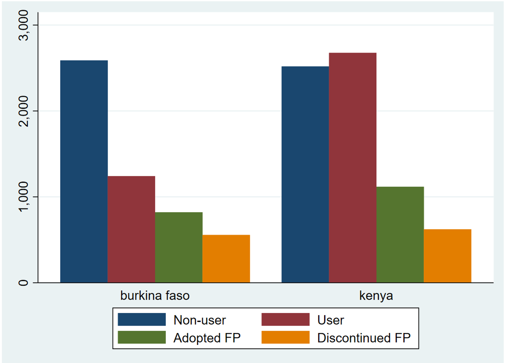
Our second graph uses proportions, so the visualization isn’t biased by a difference in sample sizes
. graph bar cat_1-cat_4, over(country) legend(label(1 "Non-user") label(2 "User")
label(3 "Adopted FP") label(4 "Discontinued FP"))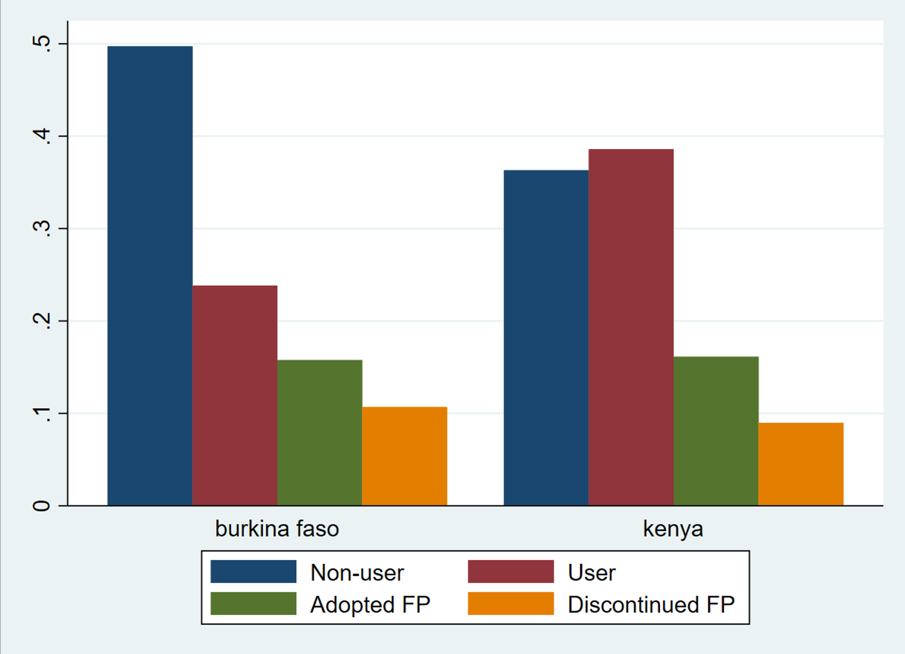
Data Analysis
Rename outcome variable
. rename cat_3 adoption
. rename cat_4 discontinue
Explanatory variables
. tab cvincomeloss_2, miss
income loss resulted from covid-19 |
restrictions | Freq. Percent Cum.
----------------------------------------+-----------------------------------
no | 658 5.42 5.42
yes | 7,566 62.31 67.73
don't know | 2 0.02 67.74
niu (not in universe) | 3,917 32.26 100.00
----------------------------------------+-----------------------------------
Total | 12,143 100.00
Use hhincomelossamt
to understand who did not lose income in
r varlink(cvincomeloss)
. tab cvincomeloss_2 hhincomelossamt_2
income loss resulted | household income loss since covid-19
from covid-19 | restrictions
restrictions | none partial complete no respon | Total
----------------------+--------------------------------------------+----------
no | 0 547 111 0 | 658
yes | 0 5,449 2,117 0 | 7,566
don't know | 0 2 0 0 | 2
niu (not in universe) | 3,904 0 0 13 | 3,917
----------------------+--------------------------------------------+----------
Total | 3,904 5,998 2,228 13 | 12,143
. replace cvincomeloss_2 = 0 if hhincomelossamt_2 == 1
(3,904 real changes made)Look at the other explanatory variable
. tab country covidconcern_2, row
| concerned about getting infected
pma country | not conce a little concerned very conc currently | Total
-------------+-------------------------------------------------------+----------
burkina faso | 212 461 955 3,576 1 | 5,208
| 4.07 8.85 18.34 68.66 0.02 | 100.00
-------------+-------------------------------------------------------+----------
kenya | 162 216 1,515 5,034 8 | 6,935
| 2.34 3.11 21.85 72.59 0.12 | 100.00
-------------+-------------------------------------------------------+----------
Total | 374 677 2,470 8,610 9 | 12,143
| 3.08 5.58 20.34 70.91 0.07 | 100.00
| concerned
| about
| getting
| infected
pma country | no respon | Total
-------------+-----------+----------
burkina faso | 3 | 5,208
| 0.06 | 100.00
-------------+-----------+----------
kenya | 0 | 6,935
| 0.00 | 100.00
-------------+-----------+----------
Total | 3 | 12,143
| 0.02 | 100.00
Replace NIU to missing
. forvalues i = 1/2 {
foreach var in age marstat educattgen cvincomeloss covidconcern
hhincomelossamt wealtht cp {
replace `var'_`i' = . if `var'_`i' > 90
}
}
(0 real changes made)
(1 real change made, 1 to missing)
(2 real changes made, 2 to missing)
(0 real changes made)
(0 real changes made)
(0 real changes made)
(2 real changes made, 2 to missing)
(2 real changes made, 2 to missing)
(0 real changes made)
(0 real changes made)
(1 real change made, 1 to missing)
(15 real changes made, 15 to missing)
(3 real changes made, 3 to missing)
(13 real changes made, 13 to missing)
(993 real changes made, 993 to missing)
(0 real changes made)
Establishing the survey weight settings
. svyset [pw=panelweight], psu(eaid_1) strata(strata_1)
pweight: panelweight
VCE: linearized
Single unit: missing
Strata 1: strata_1
SU 1: eaid_1
FPC 1: <zero>
.
Demonstrating weighted proportions
. tab country adoption, row
| category==Adopted FP
pma country | 0 1 | Total
----------------------+----------------------+----------
burkina faso | 4,386 821 | 5,207
| 84.23 15.77 | 100.00
----------------------+----------------------+----------
kenya | 5,816 1,118 | 6,934
| 83.88 16.12 | 100.00
----------------------+----------------------+----------
Total | 10,202 1,939 | 12,141
| 84.03 15.97 | 100.00
. svy: tab country adoption, row
(running tabulate on estimation sample)
Number of strata = 23 Number of obs = 12,141
Number of PSUs = 474 Population size = 12,134.981
Design df = 451
-------------------------------
pma |category==Adopted FP
country | 0 1 Total
----------+--------------------
burkina | .8503 .1497 1
kenya | .8353 .1647 1
|
Total | .8418 .1582 1
-------------------------------
Key: row proportion
Pearson:
Uncorrected chi2(1) = 5.0554
Design-based F(1, 451) = 1.8652 P = 0.1727
Creating an age category recode
. recode age_2 (15/24=1) (25/34=2) (35/49=3), gen(age_rec)
(12143 differences between age_2 and age_rec)
. label define agerecode 1 "15-24" 2 "25-34" 3 "35-49"
. label values age_rec agerecode
.
. recode birthevent_2 (99=0) (0=0) (1/2=1) (else=2), gen(birth_rec)
(10389 differences between birthevent_2 and birth_rec)
. label define birthrecode 0 "No births" 1 "1 or 2 births" 2 "3+ births"
. label values birth_rec birthrecodeLogistic regressions
. svy: logit adoption i.age_rec urban i.wealtht_2 i.educattgen_2
cvincomeloss_2 i.covidconcern_2 if country == 1 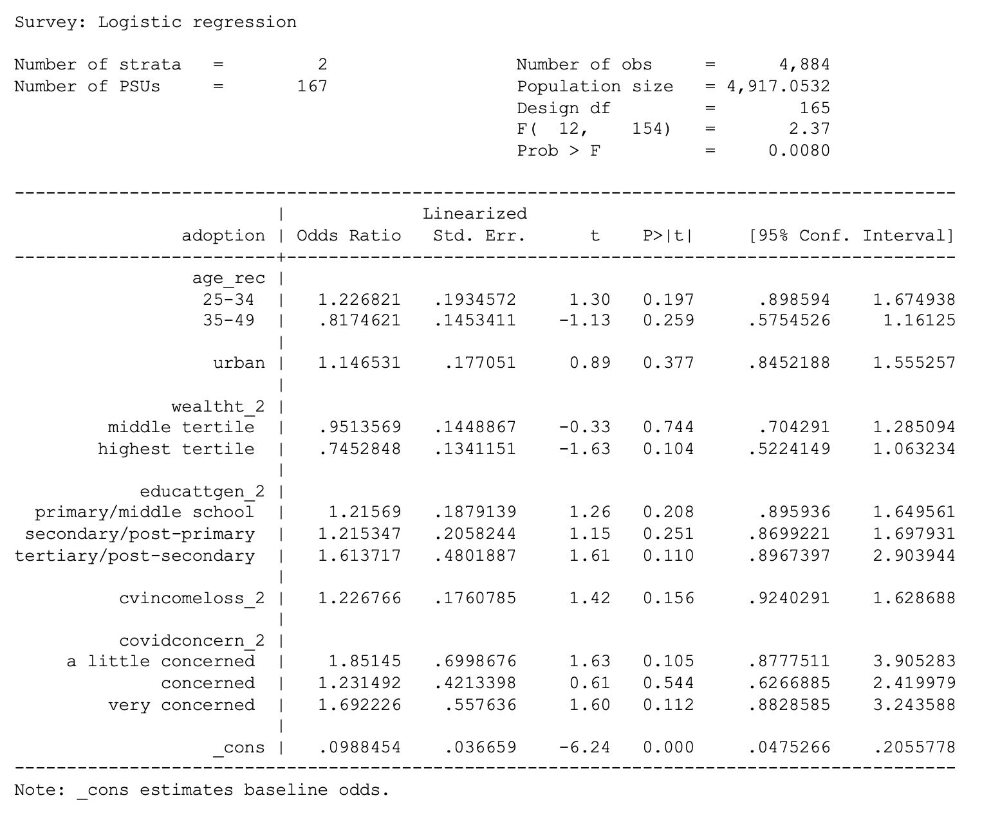
. svy: logit adoption i.age_rec urban i.wealtht_2 i.educattgen_2
cvincomeloss_2 i.covidconcern_2 if country == 7 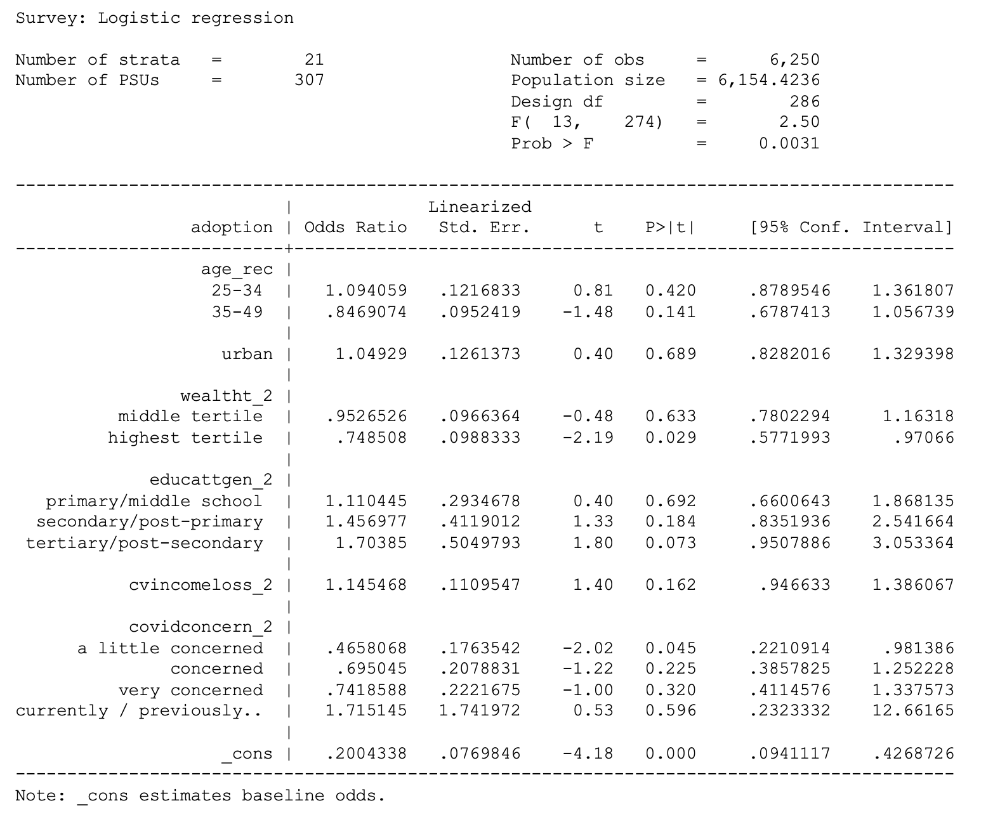
. svy: logit discontinue i.age_rec urban i.wealtht_2 i.educattgen_2
cvincomeloss_2 i.covidconcern_2 if country == 1 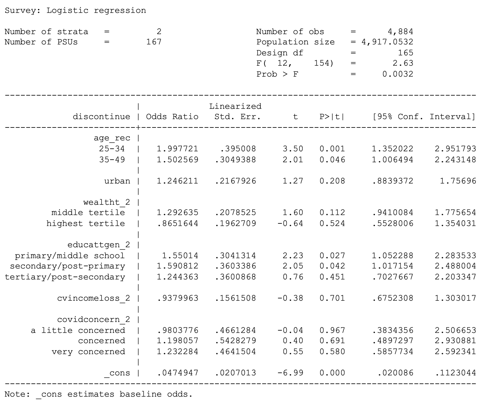
. svy: logit discontinue i.age_rec urban i.wealtht_2 i.educattgen_2
cvincomeloss_2 i.covidconcern_2 if country == 7 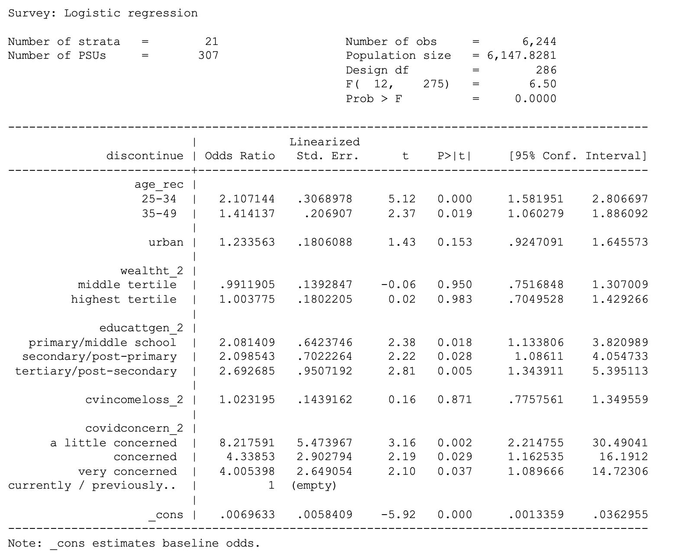
Logistic regressions with parity
. svy: logit adoption i.age_rec i.birth_rec urban i.wealtht_2 i.educattgen_2
cvincomeloss_2 i.covidconcern_2 if country == 1 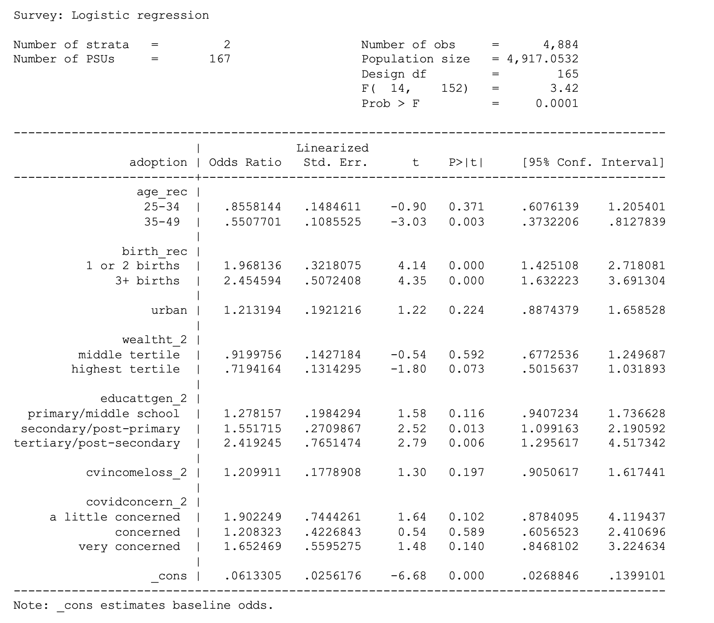
. svy: logit adoption i.age_rec i.birth_rec urban i.wealtht_2 i.educattgen_2
cvincomeloss_2 i.covidconcern_2 if country == 7 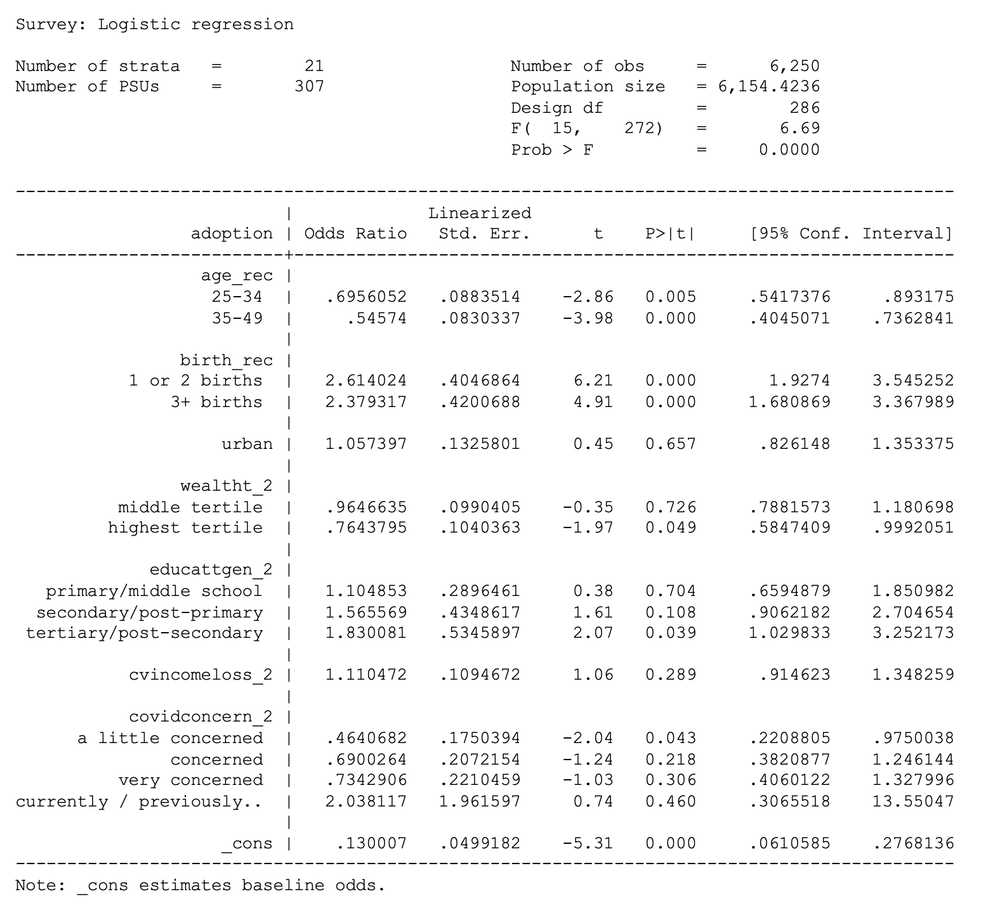
. svy: logit discontinue i.age_rec i.birth_rec urban i.wealtht_2 i.educattgen_2
cvincomeloss_2 i.covidconcern_2 if country == 1 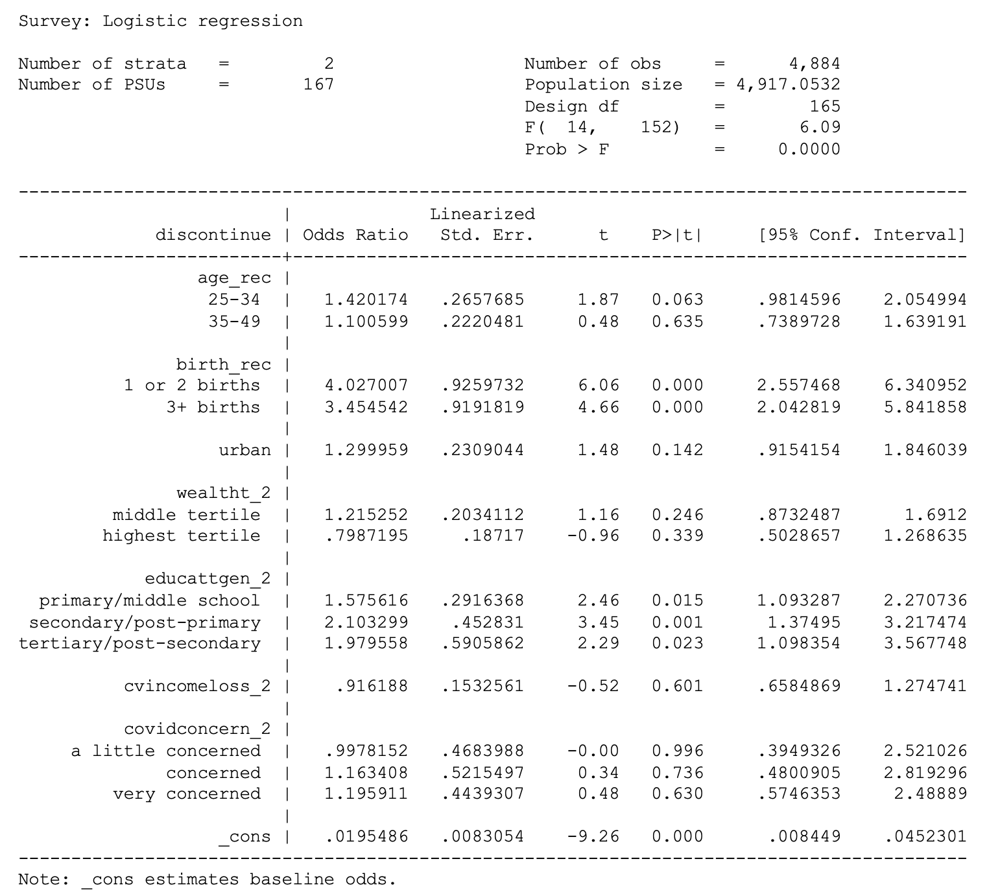
. svy: logit discontinue i.age_rec i.birth_rec urban i.wealtht_2 i.educattgen_2
cvincomeloss_2 i.covidconcern_2 if country == 7 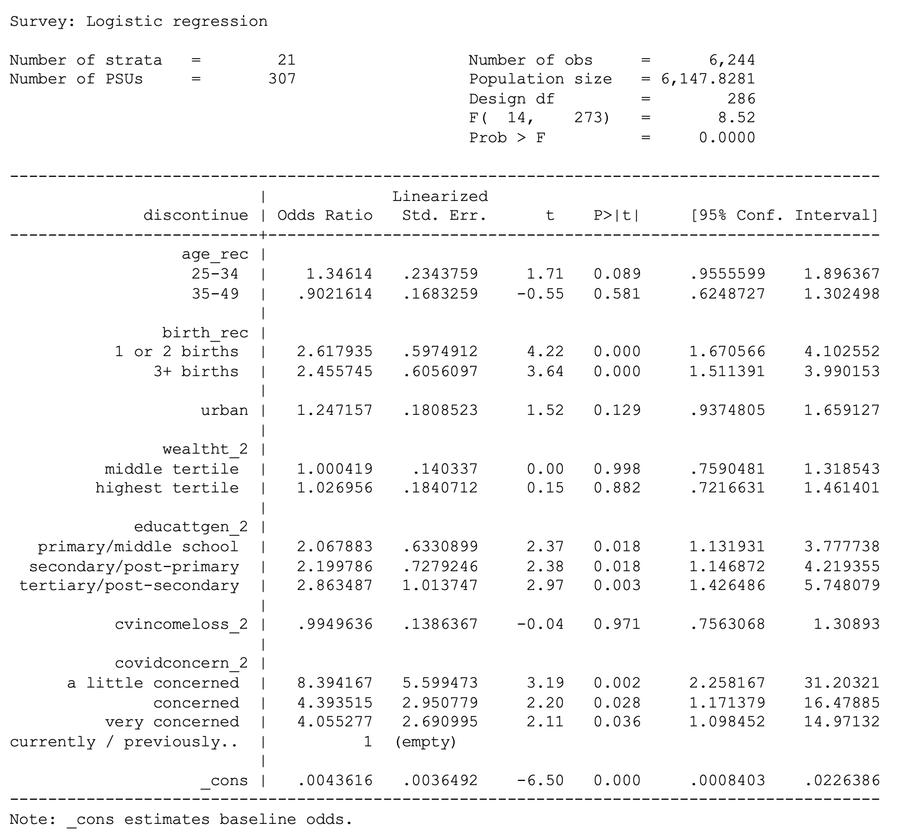